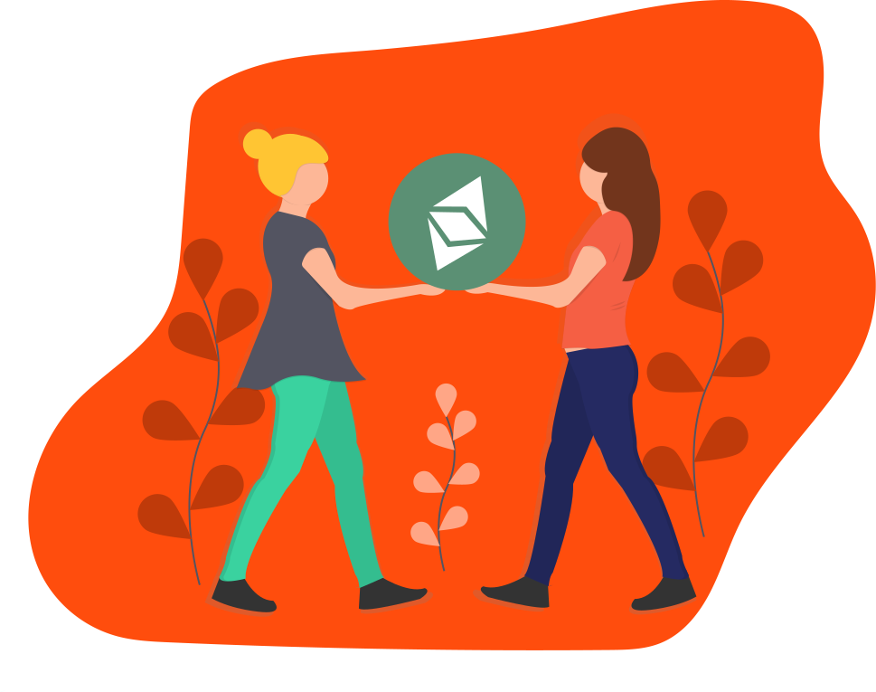

Bu ekibin topluluğa daha çok katkı sağlaması, sunucu ve diğer masraflarını ödemesine yardımcı olmak veya üyelere bir kahve ısmarlamak için (yorucu bir günün ardından çok iyi geliyor) Patreon'dan veya Etherium aracılığıyla bağış yapabilirsiniz.
Mercode; yazılımcıları, hackerları, aktivistleri, makerları ve tasarımcıları tek çatı altında toplayan, internetin merkezsizleşmesi ve kullanıcıların özgürleşmesi üzerine açık kaynaklı özgür yazılım projeleri üreten ve varolan projeleri geliştirip destekleyen bir topluluk ve sosyal ağdır.
Video İzleMercode; bir girişim, şirket veya marka değildir ve kesinlikle kâr amacı gütmez. Mercode'un yegane amacı, Türkiye ve dünyadaki özgür yazılım ve STEM anlayışlarını gelir amacıyla kullanmaya çalışan kuruluşların, yazılımcı istismarının ve emeğe yapılan saygısızlıkların önüne geçmek, insanlara merkezsiz ve özgür internet anlayışını aşılamaktır. Bu büyük amaç için Mercode ekibi ve topluluğu, açık kaynaklı projeler yaparak adını duyurmaya devam etmektedir.
Kaydol Katkıda BulunMerkür ve alt projeleri, tamamen kullanıcıların ve ekip üyelerinin bağışlarıyla tutunur. Sonuç olarak Merkür’ün devamlılığı tamamen topluluğun yani siz insanların ellerindedir. Bu ekibin topluluğa daha çok katkı sağlaması için, sunucu ve diğer masraflarını ödemesine yardımcı olmak veya üyelere bir kahve ısmarlamak için Patreon'dan veya Etherium aracılığıyla bağış yapabilirsiniz. Eğer Merkür devamlılığını ve hizmetlerini sürdüremeyecek duruma gelirse, *onlar* kazanır.
Bağış YapMercode'da, takım ile topluluk arasında büyük bir ayrım yoktur. Herkes, geçmişine veya yaşına bakılmaksızın Mercode'a destek olabilir ve ekibimize katılabilir. Katılmak için tek gereklilik, bu güzel FOSS topluluğuna katkıda bulunmak ve desteklemek.
Bize Katıl Katkıda BulunBiz insanlığın sınırlar, ülkeler ve bayrakları internet ile aşabileceğine inanıyoruz. Ne yazık ki aslında sahipsiz olması gereken Web, büyük şirket ve devletlerin sunucu monopolileriyle ele geçirilmiş durumda. Bu istilayı önlemenin tek yolu merkeziyetsizleşmek!
Projeler